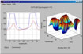

| Multilayer thin film design and wideband optical monitoring of deposition process |
| Description: |
Improving the process of design and deposition of multilayer thin film optical filters. Assocciated article was presented at the "8th ICATPP Conference" |
 |
| Keywords: |
Pierre Auger Observatory, multi layer thin films, simulation, optimum design, deposition, wideband optical monitoring, grating spectrograph, AVR AT2313, LabVIEW, Matlab |
| Status: |
Complete (June 2002, June 2003, October 2003) |
|
| Related files |
Size |
|
| The paper presented at the "8th ICATPP Conference" |
88.3 kB |
Download |
| Original Greek version of my presentation |
1.3 MB |
Download |
| Translated English version of my presentation |
1.3 MB |
Download |
| Experimental setup (.wmv) |
310.3 kB |
Download |
| Calibration with a red laser beam (.wmv) |
1.3 MB |
Download |
| Measurement of various filters' transmittance (.wmv) |
1.5 MB |
Download |
|
| Related links |
|
| The presentation of the "8th ICATPP Conference" by Dr S. Maltezos |
Visit |
| Dr S. Maltezos' home page |
Visit |
| The Pierre Auger Observatory web page |
Visit |
| The 8th ICATPP Conference on Astroparticle, Particle, Space Physics, Detectors and Medical Physics Applications |
Visit |
|